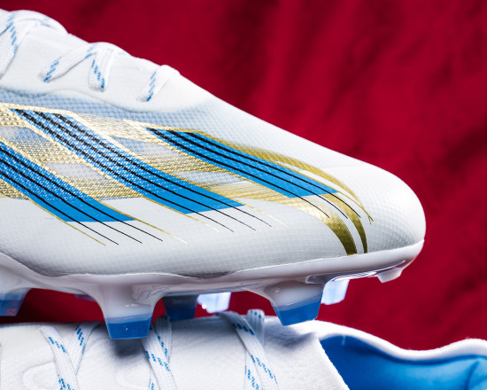

Periodista Deportivo
Nuevas adidas X exclusivas para Leo Messi
1El astro argentino Leo Messi y adidas nos presentan la nueva edición exclusiva de X Crazyfast que vestirá el delantero del Inter de Miami durante los próximos partidos.
Desde Alemania, nos están mal acostumbrando con las botas exclusivas de Leo Messi. No es ningún secreto que los modelos destinados a vestir los pies del rosarino nunca han sido especialmente agraciados en el apartado estético, pero, desde hace un tiempo, eso ha cambiado. Las últimas ediciones de las botas de fútbol adidas X Crazyfast exclusivas para Messi se están convirtiendo obras de arte, piezas de coleccionista que brillan con luz propia acompañadas por los éxitos del delantero.Esta vez estamos ante unas de las botas de fútbol exclusivas para Leo Messi más bonitas de toda la carrera del futbolista, y eso son palabras mayores. El diseño es un homenaje a varias cosas. Los colores utilizados atienden a los colores de la bandera del país de nacimiento de Messi, dos tonalidades que si juntas ya quedan bien, cuando se mezclan con el color dorado se convierten en placer para los ojos.
En cuanto al diseño, vemos como desde la marca alemana han querido hacer un guiño a las antiguas botas de fútbol adidas F50 Tunit, algo que ya vimos en las botas con las que Leo Messi alzó la Copa del Mundo. Pero eso no es todo, ya que, si viajamos hasta el talón, encontramos las tres estrellas que corresponden a las tres Copas del Mundo que posee en su palmarés la Selección Argentina de Fútbol.En cuanto a funcionalidad, ninguna diferencia con las botas de fútbol adidas X Crazyfast in line. Si sois amantes de las botas de fútbol, sabréis que Leo Messi usa una versión totalmente modificada de este silo, pero las que veremos en las tiendas no poseerán dichas modificaciones y serán modelos normales del silo más ligero de adidas.
Creador de Contenido
Vuelven las adidas F50
Vuelve uno de los silos de velocidad más míticos y buscados por todo el mundo del futbol.Vuelve a la velocidad pura de la mano de adidas y vamos a conocer fondo estas nuevas adidas F50 “fast reborn”.
La vuelta de adidas f50 responde a la vuelta del silo de velocidad puro y sin añadidos a la marca alemana, para traernos nuevamente una bota ultra tecnológica con el mejor soporte y con todo el legado que supone el apellido de F50. Nostalgia y rendimiento, unidos para dar lo mejor y lo más rápido.Entonces, que nos trae adidas en este 2024, lo cierto es que la bota es completamente nueva y se aleja mucho de lo que teníamos en adidas X, comenzamos con una carcasa de un material llamado Sprintweb y Fibertouch, que es un hilo trenzado que bebe en cierta manera de lo que vimos con speedflow, y que da forma a una carcasa suave, pero con grip. La bota viene en dos versiones una con cordones y otra sin cordones.
Esta carcasa no viene sola, ya que, en la versión con cordones, tenemos una malla interna que se acopla a nuestro pie dándonos el ajuste necesario de tener una bota todo en uno, pero a la vez la apertura y capacidad que dota a la bota, el tener la lengüeta abierta. Los pies anchos también están admitidos en estas nuevas adidas F50.La versión sin cordones por su parte viene con un ajuste de Primeknit al estilo de lo que vimos en otras botas de la marca alemana y que nuevamente recuerda mucho a lo que tuvimos con aquellas Speedflow, un ajuste espectacular.
Siguenos en nuestras redes sociales: